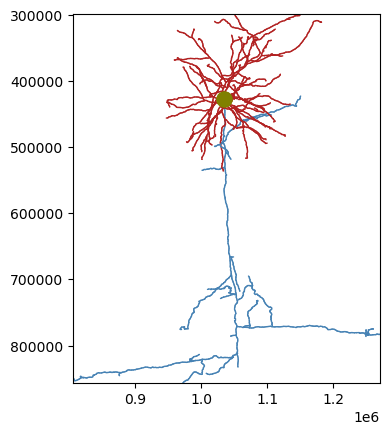

from caveclient import CAVEclient
import meshparty.skeleton_io
import numpy as np
client = CAVEclient("minnie65_public")Skeleton Service
subfunction to convert skeleton
from meshparty import skeleton
def read_skeleton_from_dict(f):
"""
Helper function for extracting all parts of a skeleton file from a dictionary.
Parameters
----------
f : dict
dictionary that includes the constituent elements for building a meshparty skeleon
Returns
-------
:obj:`meshparty.skeleton.Skeleton`
skeleton object loaded from the dictionary
"""
vertices = np.array(f["vertices"])
edges = np.array(f["edges"])
if "mesh_to_skel_map" in f.keys():
mesh_to_skel_map = f["mesh_to_skel_map"]
else:
mesh_to_skel_map = None
vertex_properties = f["vertex_properties"]
if "meta" in f.keys():
meta = f["meta"]
else:
meta = {}
if "root" in f.keys():
root = f["root"]
elif "compartment" in vertex_properties.keys():
root_guess = np.where(np.array(vertex_properties['compartment'])==1)[0]
if len(root_guess)==1:
root = root_guess[0]
else:
root = len(edges)
else:
root = None
return skeleton.Skeleton(
vertices=vertices,
edges=edges,
mesh_to_skel_map=mesh_to_skel_map,
vertex_properties=vertex_properties,
root=root,
meta=meta,
)Download skeleton as dictionary
root_id = 864691134918592778
sk_dict = client.skeleton.get_skeleton(root_id, output_format='json')
sk_dict.keys()dict_keys(['jsonification_version', 'branch_points', 'branch_points_undirected', 'distance_to_root', 'edges', 'end_points', 'end_points_undirected', 'hops_to_root', 'indices_unmasked', 'mesh_to_skel_map', 'mesh_to_skel_map_base', 'meta', 'node_mask', 'root', 'root_position', 'segment_map', 'topo_points', 'unmasked_size', 'vertex_properties', 'vertices'])Convert dictionary to meshwork skeleton
# manually generating meshparty skeleton
sk = meshparty.skeleton.Skeleton(
vertices=np.array(sk_dict['vertices']),
edges=np.array(sk_dict['edges']),
mesh_to_skel_map=sk_dict['mesh_to_skel_map'],
vertex_properties=sk_dict['vertex_properties'],
root=sk_dict['root'],
meta=sk_dict['meta'],
)# with function call
sk = read_skeleton_from_dict(sk_dict)Plot with skeleton_plot
import skeleton_plot
skeleton_plot.plot_tools.plot_skel(sk=sk,
invert_y=True,
pull_compartment_colors=True,
plot_soma=True)
Estimate path length
# Select the indices associated with the dendrites
sk_compartments = np.array(sk.vertex_properties['compartment'])
dendrite_inds = (sk_compartments==3) | (sk_compartments==4)| (sk_compartments==1) #soma is included here to connect the dendrite graphs
# create new skeleton that masks (selects) only the dendrite
sk_dendrite = sk.apply_mask(dendrite_inds)
print("Dendrite pathlength of all branches is : ", sk_dendrite.path_length() / 1000, ' um')Dendrite pathlength of all branches is : 5038.296 um# Select the indices associated with the dendrites
sk_compartments = np.array(sk.vertex_properties['compartment'])
axon_inds = (sk_compartments==2)
# create new skeleton that masks (selects) only the axon
sk_axon = sk.apply_mask(axon_inds)
print("Axon pathlength is : ", sk_axon.path_length() / 1000, ' um')Axon pathlength is : 2666.8994 umEstimate synaptic density
# Calculate synapse density (CAVE query)
n_syn_in = len(client.materialize.synapse_query(post_ids=root_id))
n_syn_out = len(client.materialize.synapse_query(pre_ids=root_id))
print("Dendrite synaptic density is : ", n_syn_in / (sk_dendrite.path_length()/1000), ' per um')
print("Axon synaptic density is : ", n_syn_out / (sk_axon.path_length()/1000), ' per um')Dendrite synaptic density is : 1.3034168 per um
Axon synaptic density is : 0.06861901 per um